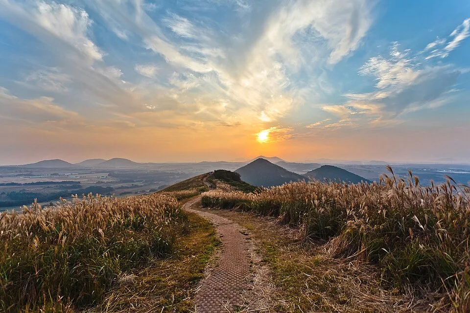
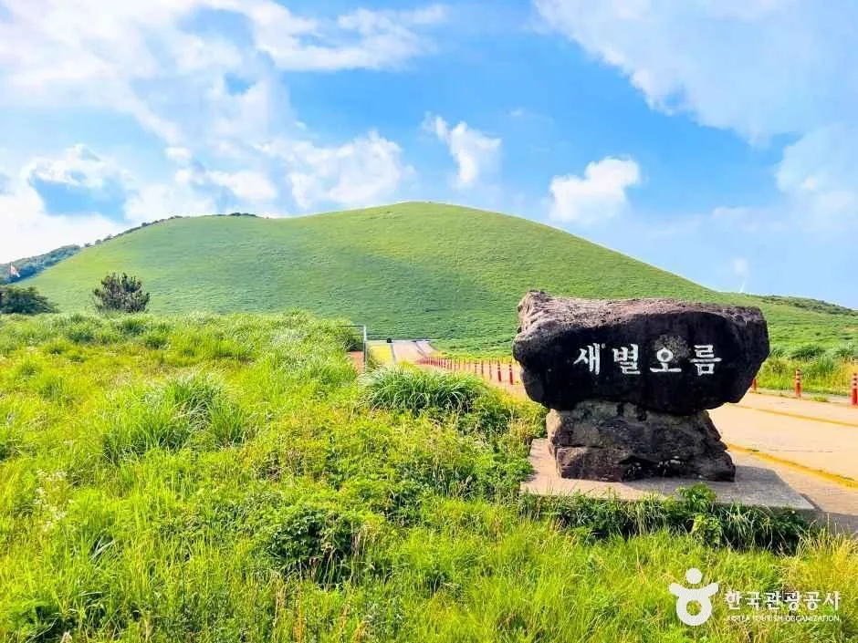
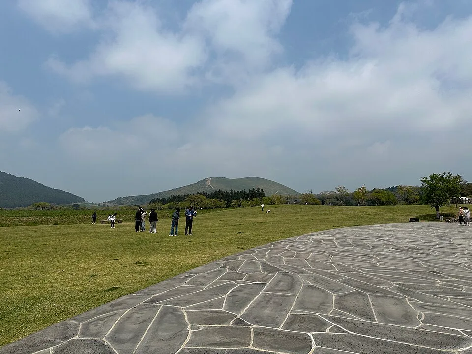
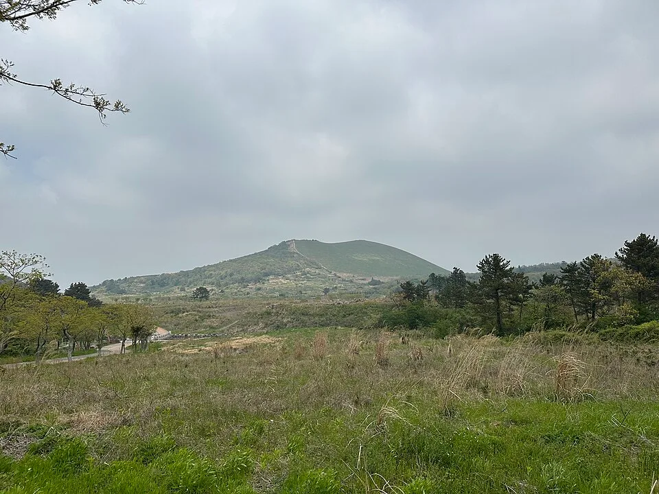
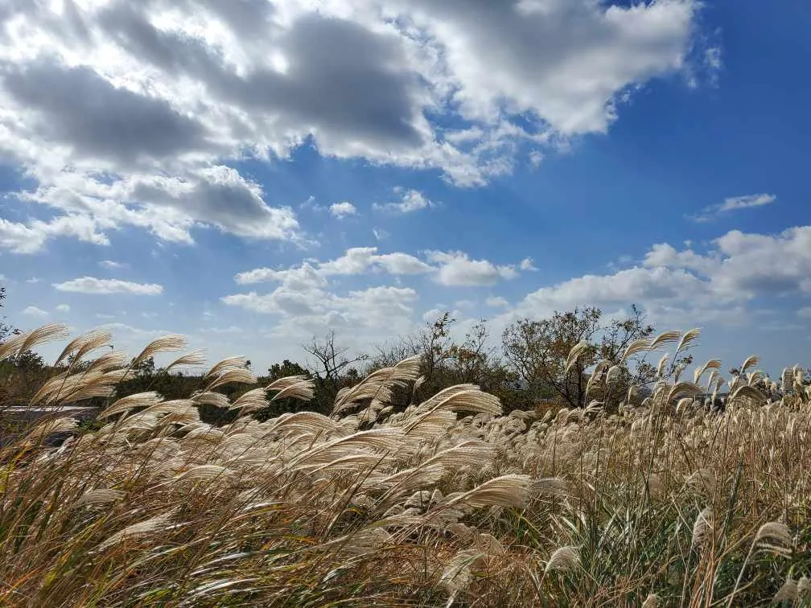
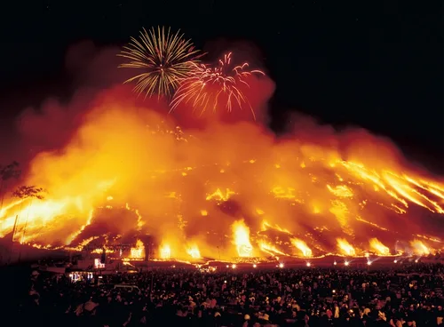
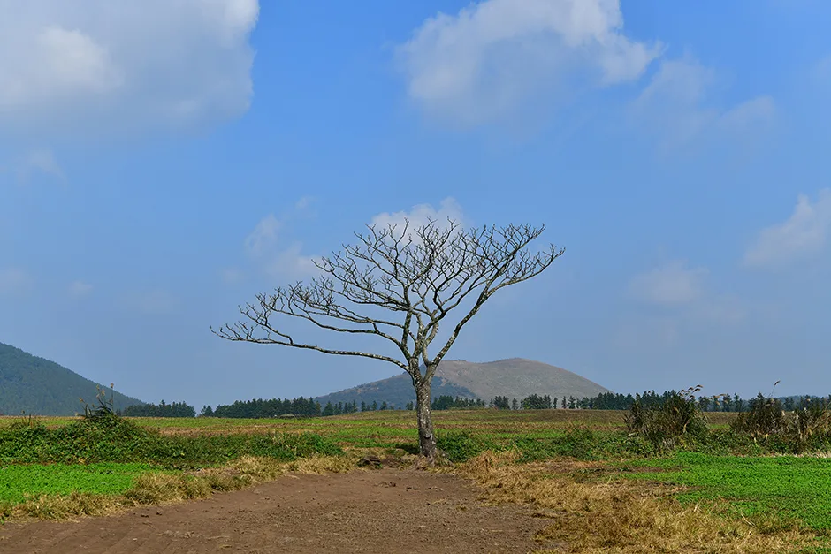

▲ 노을 무렵 새별오름 능선. 억새가 절정에 이르는 10~11월이면 등반로 양옆이 이런 황금빛으로 물든다
제주 오름 중에서도 새별오름은 유독 "어디 있는 오름이냐", "몇 분이면 오르냐"는 질문이 많다. 한라산이나 1100도로처럼 고지대까지 차로 올라가는 곳이 아니라, 평지 가까운 중산간에 봉긋 솟은 오름이라 접근 방식 자체가 다르기 때문이다. 방문객들이 실제로 가장 많이 검색하는 질문 순서대로 정리했다.
1. 새별오름, 정확히 어디에 있나

▲ 새별오름 입구의 명칭석. 뒤로 보이는 봉긋한 사면이 정상까지 이어지는 등반로다 사진=한국관광공사
새별오름은 제주시 애월읍 봉성리 산 59-8번지, 평화로(1135번 지방도) 변에 있다. 제주 서부 중산간 지역으로, 한라산 정상부까지 올라가는 1100도로나 성판악·관음사 탐방로와는 완전히 다른 위치다. 표고(해발고도)는 519.3m, 비고(오름 자체 높이)는 119m, 둘레는 2,713m, 면적은 약 52만 2,216㎡(약 52.2ha)다. 이름처럼 저녁 하늘의 샛별을 닮았다고도 하고, 야트막한 봉우리가 별처럼 외따로 솟아 있어 붙은 이름이라는 설도 있다. 중요한 건 접근성이다. 한라산처럼 예약이나 통제 시간이 없고, 평화로에서 바로 진입로가 연결돼 내비게이션에 '새별오름'만 찍으면 헤맬 일이 거의 없다. 한국관광공사 소개에 따르면 새별오름은 남서·북서·북동 방향으로 능선이 뻗어 나가고 그 끝마다 봉우리가 솟아 있는 별 모양의 지형으로, 서쪽은 삼태기처럼 넓게 열려 있고 북쪽은 깊게 패어 있다. 다섯 개의 봉우리가 별자리처럼 늘어선 모습이라 '샛별'이라는 이름이 붙었다는 설명이 여기서 나온다.
2. 주차장은 몇 대까지 세울 수 있나

▲ 새별오름 입구 진입로. 주차장에서 능선 들머리까지 포장길로 이어진다 ⓒ Grapesurgeon(Wikimedia Commons, CC BY-SA 4.0)
진입로 앞에 무료 공영주차장이 있고, 화장실(장애인 화장실 포함)도 갖춰져 있다. 다만 제주시나 관리기관이 공식적으로 밝힌 정확한 수용 대수는 확인되지 않는다. 이 점이 다른 카프리즘 기사에서 다룬 한라산 공영주차장(정액제→시간가산제로 개편, 소형 하루 최대 1만 3,000원)과 가장 다른 지점이다. 새별오름은 주차료 자체가 없는 대신, 대수 관리도 느슨하다는 뜻이다.
📍 주차, 이렇게 대비하자
평상시 평일이라면 주차난을 걱정할 정도는 아니다. 문제는 두 시즌이다. 하나는 억새가 절정에 이르는 10~11월 주말, 다른 하나는 매년 3월 열리는 제주들불축제 기간이다. 들불축제 때는 제주시가 축제장 방문객 수송을 위해 시내 노선버스와 별도로 셔틀버스 70대를 투입할 정도로 인파가 몰린다. 셔틀을 그만큼 늘려야 한다는 사실 자체가, 평소 주차장 용량만으로는 성수기 수요를 감당하기 어렵다는 뜻이다. 억새철 주말 오전 일찍 방문하거나, 대중교통·셔틀 이용을 함께 고려하는 편이 안전하다.
3. 정상까지 얼마나 걸리나

▲ 새별오름의 사면. 동쪽은 비교적 완만하고 서쪽은 경사가 급한 편이다 ⓒ Grapesurgeon(Wikimedia Commons, CC BY-SA 4.0)
주차장에서 정상까지는 편도 20~30분, 왕복으로는 40분에서 1시간 정도 잡으면 된다. 비고(오름 자체 높이)가 119m에 불과해 한라산 탐방로들과는 비교가 안 될 만큼 짧다. 탐방로는 오름을 크게 돌아 오르는 형태로 양방향에 나 있는데, 동쪽 코스가 비교적 완만하고 서쪽 코스는 경사가 급한 편이다. 처음 오른다면 완만한 동쪽으로 올라 가파른 서쪽으로 내려오는 코스가 무릎에 부담이 덜하다.
| 항목 | 내용 |
|---|---|
| 표고(해발고도) | 519.3m |
| 비고(오름 높이) | 119m |
| 둘레 | 2,713m |
| 면적 | 약 52.2ha(522,216㎡) |
| 형태 | 복합형(사면 2개가 맞붙은 형태) |
| 정상까지 | 편도 20~30분, 왕복 40분~1시간 |
| 입장료·주차료 | 모두 무료 |
4. 운동화로 가능한가
운동화면 충분하다. 다만 슬리퍼나 샌들은 권장되지 않는다. 탐방로 자체는 흙길이라 별다른 암벽 구간은 없지만, 서쪽 사면은 경사가 있고 비가 온 뒤에는 미끄러워질 수 있다. 억새철에는 억새 이삭이 양옆으로 늘어서 길을 스치는 구간도 있어 반팔보다는 긴팔이 편하다. 반려견 동반도 가능하지만 목줄은 2m 이내로 유지해야 한다. 유모차나 휠체어로는 완만한 동쪽 초입까지만 접근할 수 있고, 정상까지는 사실상 도보로만 가능하다고 보면 된다. 방문 전 편의시설과 최신 안내는 제주시 문화관광 홈페이지에서 확인 가능하다. 바로가기
5. 억새는 언제가 절정인가

▲ 절정기 억새 근접 모습. 이삭이 은빛에서 금빛으로 바뀌며 능선 전체를 뒤덮는다 ⓒ PArangSae(Wikimedia Commons, CC BY-SA 4.0)
10월 초중순부터 물들기 시작해 11월까지가 절정이다. 9월 중순 이후 이삭이 올라오기 시작해 10월 중순을 지나면서 능선 전체가 은빛·금빛으로 뒤덮이고, 이 상태가 11월까지 이어진다. 삼태기 모양으로 넓게 열린 서쪽 사면이 오름 전체의 곡선을 한눈에 담을 수 있는 포토존으로 꼽힌다. 해 질 무렵 역광으로 억새를 담으면 능선이 금빛으로 빛나는 사진을 얻기 좋다는 평이 많다. 같은 서쪽 중산간의 저지오름과 묶어 도는 코스도 자주 추천되는데, 두 오름 모두 난이도가 낮아 하루에 함께 돌아볼 수 있다.
6. 새별오름 = 들불축제 장소, 억새철과는 다른 얘기다

▲ 제주들불축제의 오름 불놓기 장면. 매년 3월 새별오름 일대에서 열린다 사진=한국관광공사
새별오름은 매년 3월 열리는 제주들불축제의 무대이기도 하다. 2026년 축제는 3월 9일(월)부터 14일(토)까지 애월읍 봉성리 새별오름 일대에서 열리며, 사전행사는 3월 9일~12일, 본행사는 13일~14일이다. 축제 하이라이트인 오름 불놓기는 최근 몇 년째 실제 불 대신 레이저·미디어아트로 연출되지만, 달집태우기와 횃불대행진, 불꽃놀이 등 부대행사에서는 실제 불이 쓰인다. 즉 억새가 절정인 가을 풍경과 들불이 타오르는 초봄 풍경은 같은 오름의 완전히 다른 두 얼굴이다. 가을에 억새를 보러 간다면 축제와는 무관하니, "들불축제 때 가야 하나"는 고민은 접어둬도 된다.
7. 1100도로·한라산과 하루에 묶을 수 있나

▲ 새별오름 인근 '나홀로나무' 들판에서 바라본 풍경. 완만한 중산간 지형이 산악도로인 1100도로와는 확연히 다르다 사진=한국관광공사

▲ 제주 1100도로. 한라산 서쪽 어깨를 넘는 산악 횡단도로로, 평지에 가까운 새별오름 진입로와는 노면 성격이 다르다 ⓒ 비짓제주
묶을 수는 있지만, 같은 성격의 코스는 아니라는 점을 알아두는 게 좋다. 새별오름은 평화로(1135번 지방도) 변 중산간 평지에 가까운 위치이고, 카프리즘이 앞서 다룬 1100도로(지방도 1100호선)는 제주시 노형동에서 한라산 서쪽 어깨를 넘어 서귀포 중문까지 내려가는 산악 횡단도로다. 둘 다 한라산 서쪽 자락을 지나지만 노선 자체가 다르고, 1100도로는 해발 1,100m 고지까지 올라가는 급커브·안개 구간이 있는 반면 새별오름 진입로는 평지에 가까운 완만한 도로다. 마찬가지로 한라산 성판악·관음사 탐방로도 새별오름과는 위치와 예약 시스템이 전혀 다른 별개의 코스다. 하루 일정을 짠다면 오전에 새별오름 억새를 가볍게 돌아본 뒤, 오후에 1100도로를 드라이브하며 1100고지 습지나 한라산 어리목·영실 방면으로 이동하는 동선이 무리가 적다. 다만 이 경우 이동 거리와 시간이 꽤 늘어나므로, 두 곳을 하루에 모두 소화하려면 아침 일찍 출발하는 편이 낫다.
✅ 새별오름, 이것만은 확인하세요
· 위치는 제주시 애월읍 봉성리, 평화로 변 — 1100도로·한라산 탐방로와는 다른 곳
· 표고 519.3m·비고 119m, 정상까지 편도 20~30분·왕복 40분~1시간
· 억새 절정은 10월 초중순~11월, 서쪽 사면이 포토존
· 주차·입장 모두 무료지만 정확한 주차 대수는 비공개, 억새철 주말은 혼잡 대비 필요
· 운동화 필수, 서쪽 사면은 경사 있어 우천 시 미끄러움 주의
· 3월 들불축제(2026년 3/9~14)와는 별개 시즌 — 가을 억새 방문과 겹치지 않는다
8. 정리
새별오름은 한라산이나 1100도로처럼 고지대까지 차로 오르는 곳이 아니라, 평지 가까운 중산간에 봉긋 솟은 오름이다. 주차장에서 정상까지 왕복 1시간이면 충분해 초보자·가족 단위 방문객에게도 부담이 적다. 억새는 10월 초중순부터 11월까지가 절정이니 이 시기를 노리되, 정확한 주차 규모가 공개돼 있지 않은 만큼 주말에는 여유 있게 도착하는 편이 안전하다. 1100도로·한라산과 하루에 묶으려면 이동 시간을 넉넉히 잡아야 한다는 점도 기억해두자.